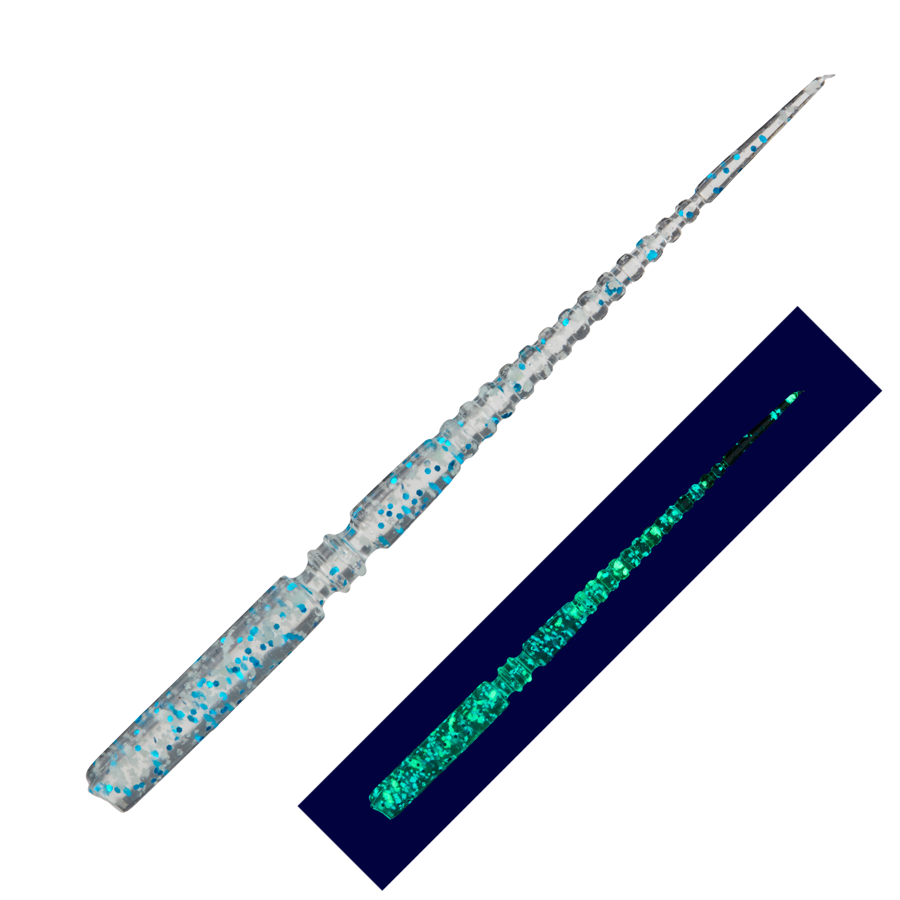
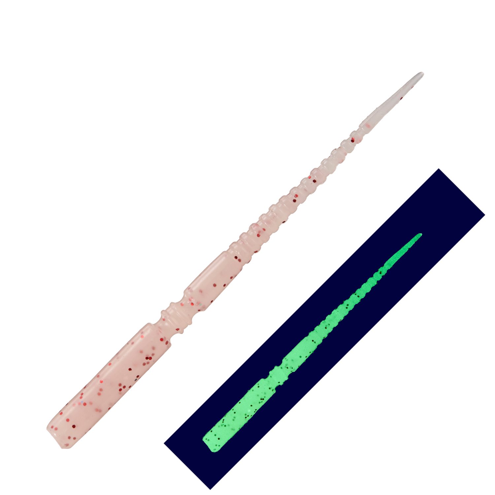
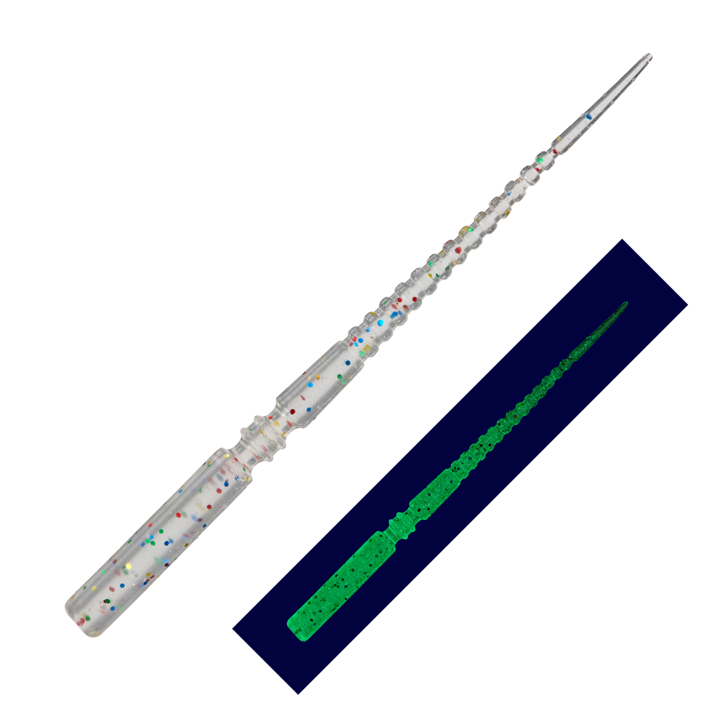
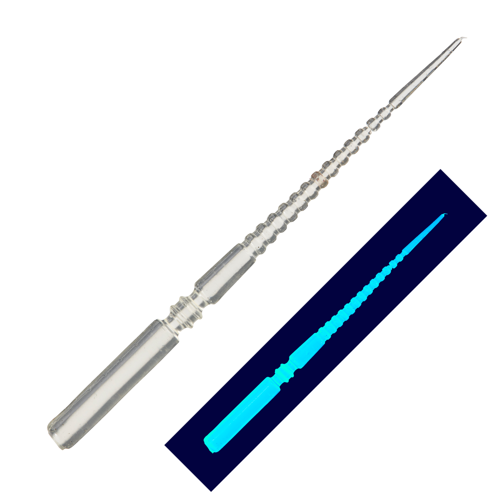

鰺道ワーム ゼロレジスト
鰺道ワーム ゼロレジストはMajor Craft（メジャークラフト）のアジング用ワームです。
激スレのアジを攻略するために開発された、吸い込みバイトに特化した3インチ（略して「ゼロレジ」）。「ゼロ抵抗だから、吸い込み抜群」をコンセプトに、ボリュームのある3インチでもアジにすんなり吸い込まれる形に仕上げているのが最大の魅力です。

画像出典:メジャークラフト公式HP
スペック
- メーカー
- Major Craft（メジャークラフト）
- タイプ
- ワーム（ジグヘッドリグ）
- サイズ
- 3インチ
- 入数
- 8本
- ターゲット
- アジ
- 価格
- 528円（税込）
- 発売
- 2026年11月
▼今すぐチェック
鰺道ワーム ゼロレジストの特徴
「ゼロ抵抗だから、吸い込み抜群」。吸い込みバイトに特化した3インチ
-
フラットなフロントボディで吸い込みやすい
フロントボディはフラットな形状で、アジの吸い込みやすさを追求。3インチのボリュームがあっても、口に入りやすい。
-
リアボディの凹凸で微波動
リアボディの凹凸が生む微波動で、繊細にアジを誘う。スローな巻きやドリフトでも存在感を出せる。
-
センターのくびれから折れ曲がる
バイトの瞬間にセンターのくびれから折れ曲がり、アジの口に吸い込まれる。長めのワームでもバイトを弾きにくい。
鰺道ワーム ゼロレジストの使い方
ジグヘッドにまっすぐ刺してキャストし、レンジを決めたらスローなただ巻きやドリフトで、リアボディの微波動を効かせて誘うのが基本です。
3インチのボリュームでアピールしながら、バイトの瞬間はくびれから折れて吸い込まれます。アタリが出たら、しっかりフッキングを入れて掛けましょう。
鰺道ワーム ゼロレジストの得意な状況
スレたアジが多い人気の釣り場や、2インチ前後のワームではアピールが足りない状況が出番。
3インチクラスのボリューム感で、大きめのアジを狙いたい時にも選びたい1本です。
激スレのアジにも吸い込まれやすいので、渋い日でも釣れるのが魅力です。
ワンポイント
カラーは発光のタイプで選ぶと分かりやすくなります。公式のカラー解説では、ドットグロー（点発光）はアミパターン、グロー（夜光）はナイトゲーム、UV（ケイムラ）は朝夕マズメや曇天、ソリッドはシルエットをはっきり見せたい時にオススメとされています。
人気カラー
鰺道ワーム ゼロレジストは全20色展開。その中から人気カラーを紹介します。

イワシ（ドットグロー）ブルーのラメが入ったイワシカラー。点発光でほどよくアピールでき、アミパターンにも。

アミレッド（グロー）アミを意識したレッド系の夜光カラー。ナイトゲームの常夜灯まわりに。

クリアラメマシマシ（グロー）クリアにラメをたっぷり入れた夜光カラー。光を反射させて目立たせたい時に。

ドクリア（UV）ケイムラ入りのクリア。澄み潮や朝夕マズメ、スレたアジに。
画像出典:メジャークラフト公式HP
鰺道ワーム ゼロレジストに似ているルアー
-
 ドライブS.AJ
レイン
詳細はこちら＞
ドライブS.AJ
レイン
詳細はこちら＞
2インチのアジング用ワーム。シルエットを小さくしたい時に。
-
 マギア2.1インチ
エーテル
詳細はこちら＞
マギア2.1インチ
エーテル
詳細はこちら＞
逆リブで強い波動を出す2.1インチ。波動でアピールしたい時に。
-
 宵姫ステルスグライド
がまかつ
詳細はこちら＞
宵姫ステルスグライド
がまかつ
詳細はこちら＞
ロングワーム対応のジグヘッド。ゼロレジストと合わせて、群れを散らさない静かなフォールで。